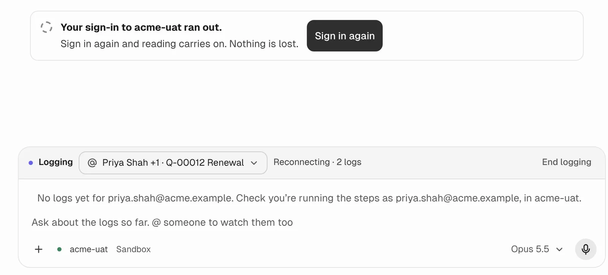
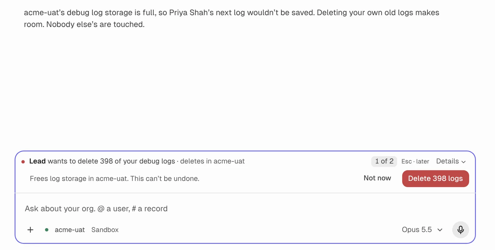
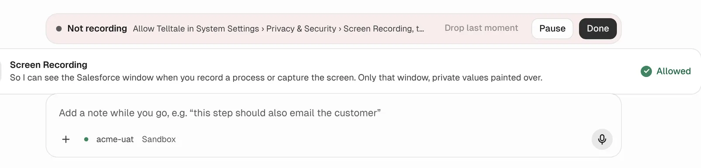

Guide · 5 of 5 · Help
Written for Beta 1.8.1
Help
Find your symptom, see what Telltale says, and do the next step.
When something goes wrong
Telltale won't open
You see macOS blocks it, or nothing happens.
Do this Drag Telltale into Applications and open it from there. If macOS asks, choose Open. On a work Mac, ask IT to allow the app dev.telltale.app.
Salesforce access is still being set up
You see The strip Setting things up on this Mac, or I couldn't finish setting things up.
Do this The first setup takes a few minutes and keeps going while you answer questions. If it stopped, choose Try again. If it stops again, choose Copy details for IT and send them on. Settings, then About, then This Mac shows where it stands.
No orgs to pick
You see The org list is empty.
Do this Open Settings, then Connectors, then Salesforce, and choose Sign in to an org. If you signed in elsewhere on your Mac, choose Refresh org list.
Your sign-in ran out
You see Your sign-in to your org ran out.
Do this Choose Sign in again. Reading carries on and nothing is lost.

Logging won't start
You see Your user in your org can't turn on debug logs. It needs View All Data or Manage Users. Or: Salesforce API access is off for your user.
Do this Ask a Salesforce admin to give your user View All Data or Manage Users, or to turn on API access. If you see that the org has used up its API calls for today, try again tomorrow.
No logs appear
You see No logs yet for a person, after about two minutes.
Do this Check that you are running the steps as that person, in that org. Logs are written for the person Telltale is watching, not for everyone.
Debug log storage is full
You see Lead wants to delete a number of your debug logs, with Delete and Not now.
Do this Salesforce stops saving new logs when storage is full. Deleting is permanent, and Salesforce doesn't keep deleted logs. You can choose only your own logs, or all of the org's. Logs this chat already read stay in Telltale. If you would rather not, choose Not now and clear space in Salesforce yourself.

The AI model refused the key, is busy, or is out of credit
You see A message such as refused the key. Update it in Settings > Models, or says it is busy or out of credit.
Do this Open Settings, then Models, and choose Test on the source. Fix the key there, or pick another source. If it is busy, wait a minute and ask again.
A connector refused the token
You see refused the token, with likely causes listed.
Do this Read the causes. Choose Make a new token and follow the steps. If an admin has to approve it, choose Copy a message for your admin.
An answer is stuck
You see Still working. No update for 30 s. After a minute and a half: Telltale's background process isn't answering.
Do this Choose Stop in the reply box, or Restart it. Your chats are kept. If you see That answer didn't finish. Ask again., choose Try again.
Recording can't find the Salesforce tab
You see Telltale can't see your org's Salesforce tab.
Do this Bring that tab to the front in Chrome, Edge, Brave, Arc or Safari, then start again.
Recording or the mic is blocked
You see Not recording, then Screen Recording is off for Telltale, so nothing was recorded. For the mic: No microphone found.
Do this Open System Settings, then Privacy & Security, then Screen Recording (or Microphone) and allow Telltale. If it isn't in the list, press + and add it from Applications. Quit and reopen Telltale, then try again. Screen Recording works only when Telltale runs from Applications.

Updates
You see Couldn't check. Tries again in 4 h. Or a card asking Move Telltale to Applications?
Do this Open Settings, then About, and choose Check now. Updates install themselves only when Telltale runs from Applications, so choose Move and reopen if asked. When the sidebar says a new version is ready, choose Restart.
Keyboard shortcuts
The last two work from any app. The overlay shortcut does nothing until a chat exists.
| To do this | Press |
|---|---|
| New chat | ⌘ N |
| Search the sidebar | ⌘ F |
| Settings | ⌘ , |
| Hide or show the sidebar | ⌘ \ |
| Delete the chat selected in the sidebar | ⌘ ⌫ |
| Send a message | Return |
| New line in a message | Shift Return |
| Answer a question from Telltale | 1, 2, 3, or Return for the first |
| Set a question aside, or close a panel | Esc |
| In the @ and # list: move, add, open Lookup | ↑ ↓, Return, ⌘ Return |
| Quick ask, from any app | Ctrl Option ⌘ Space |
| Show or hide the overlay pill, from any app | Ctrl Option ⌘ O |
Diagnostics log
If something misbehaves and you need to show someone, Telltale keeps a plain log on your Mac. Open Settings, then About, then This Mac, and look for Diagnostics log. The file is here:
~/Library/Application Support/Telltale/logs/telltale.log
It stays on your Mac until you send it. Read it before you share it, in case it names an org or a customer.
Feedback
Tell us what broke, what confused you and what you wish it did. Use the feedback section on the download page, or open an issue on the public releases page. Both are public, so leave out org names and customer data.
Uninstall
- Quit Telltale.
- Delete Telltale from Applications.
- To remove your chats and settings too, delete
~/Library/Application Support/Telltale. - To remove saved keys and tokens, open Keychain Access and delete the items named Telltale.
- Code Telltale cloned for you is in
~/Telltale/code. Delete it if you no longer need it.